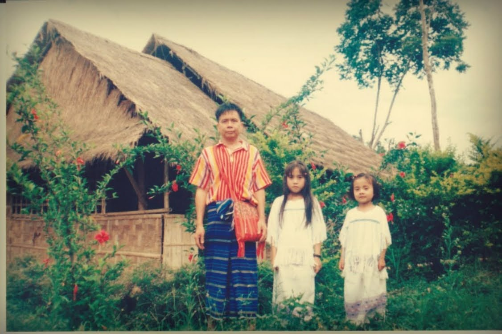

About Me
.jpg)
- Name: May Jue
- Major: Computer Science
- Minor: Studio Art
- Interest: Software Developement
Culture and Background
Many times people have asked me where I'm form or about my culture so let me tell you a bit about that. I was born in Thailand, but wait... don't get too excitied yet. I actually don't know much about Thailand or the Thai culture becuase I lived in the Karen Refugee camp. Now you might be a bit sad, but don't be! I had a great childhood and really enjoyed living in the camp(Though I must say, the adult hate it there. But as of us kiddos, we had little to no adult supervision so I could do whatever and rome around freely, outside of school that is). Now, the reason I was in the refugee camp is because of genocide but I won't get into that now. My people are call the Karen peopel( That's right, K-A-R-E-N like a lady's name. Have you heard of us before?) and we lived in the Karen state in Burma (At least we did before the whole attacking and killing thing. Many are still there today while some of us are scatter all over the world). Nevertheless, when some of us relocated to Thailand, we were no considered citizens(Even those of us who were born in Thailand), thus, we could not just leave the camp and travel around Thailand... leagally. Anyhow, that is why though I was born and lived in Thailand, I am not Thai or know much about the Thai culture... and I'm sorry, this also means I don't know any Thai recipies... sad.. Never heard of Karen people before? Here's some pictures.